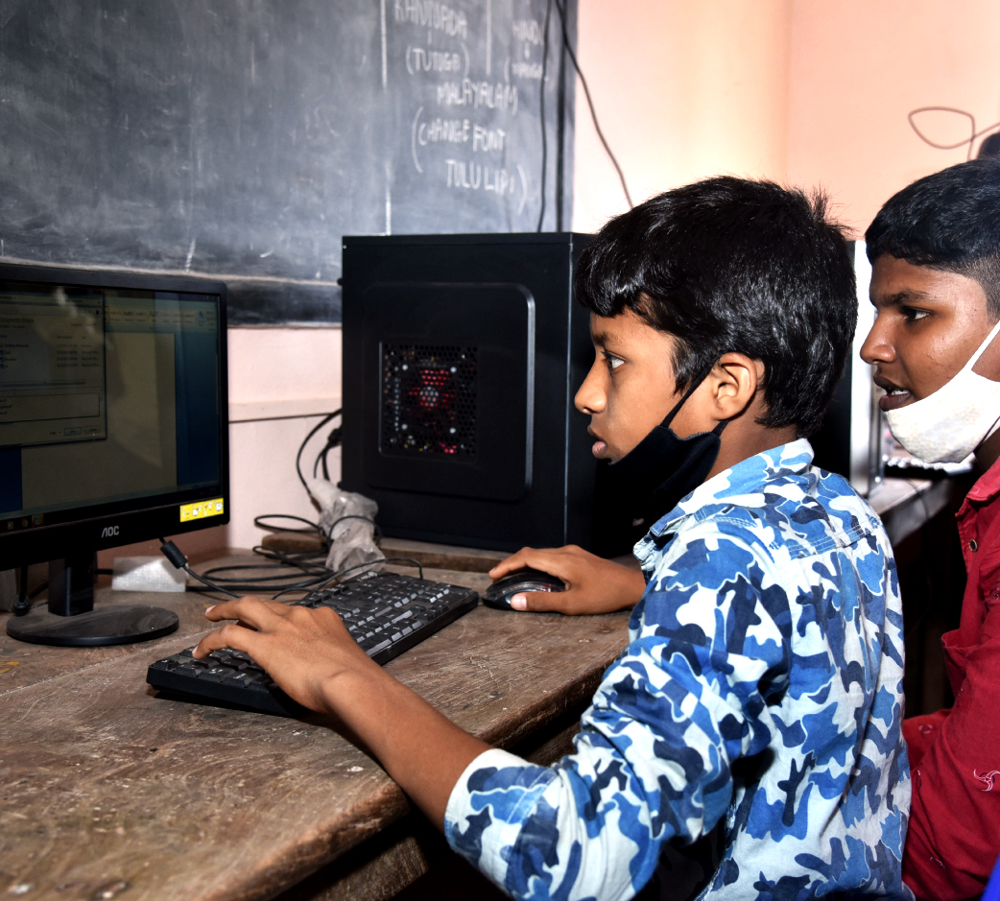
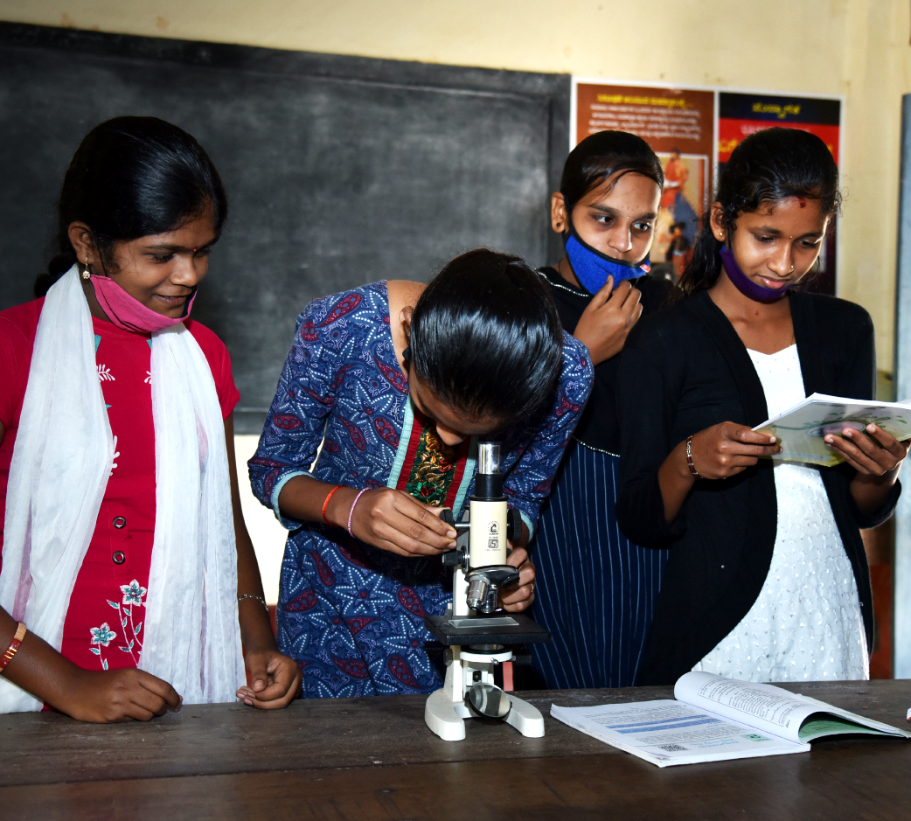
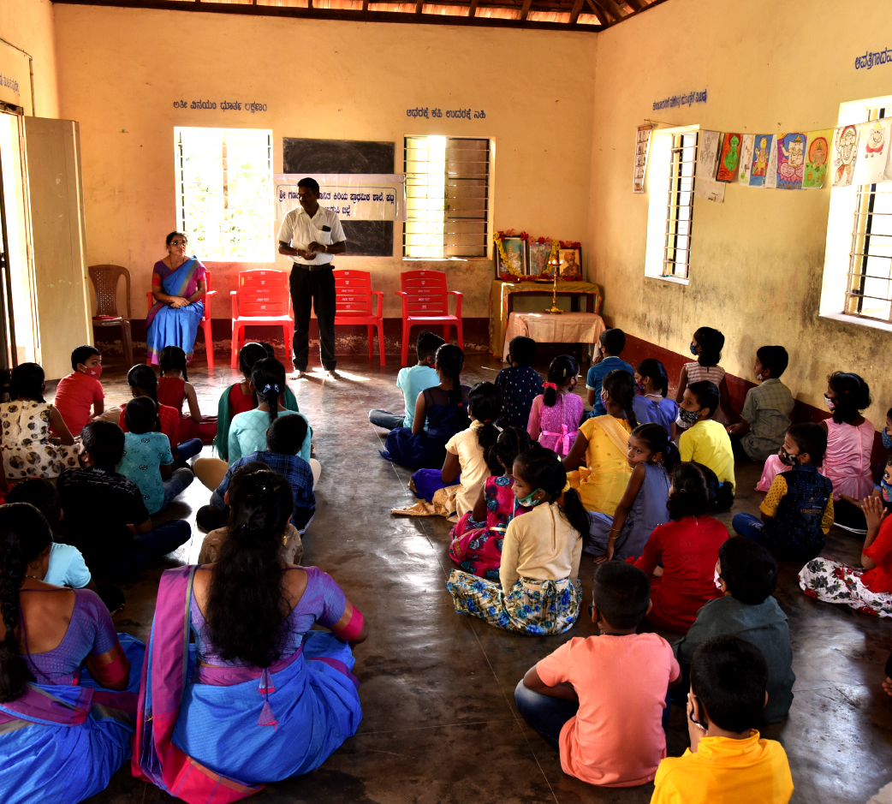

About Rural Education
Education is important for everybody, whether they are learning new facts, skills, or trades. Having the opportunity to learn always benefits the individual. Over the past years, we have seen a focus on providing education to females all over the world, arguing that girls receive an education no less then men. However, if we take a step further, we can think about educating communities, specifically rural communities. What effects would education have if we were to educate a group of people?
It is important to understand the need for good quality education in rural areas, as it helps keep rural areas populated. Young people move to urban areas for better opportunities in education and employment, improved rural education is one possible strategy for keeping them in rural areas. It was recently documented that 69% of India’s population lives in rural areas. Quality education is a pertinent tool for enhancing quality of life, creating awareness and capability, increasing freedom, and improving overall holistic human development for the people and the nation.
|  |  |  |
Our Vision
Quality formal education has become an inseparable part of human progress in the modern world. It has become imperative for an individual to be ‘educated’ in true spirit of the word by moving beyond the conventional frameworks of learning. The vision is to create through education an informed and responsible individual who is sensitive to the needs of the society and responds to them keeping in mind the values of the society.
Rural Education Society aims to inculcate among the student community the following cherished ideals:
> Awaken an altruistic spirit of nationalism and a sense of pride to be an Indian
> Exhibit a sense of excellence in the process of character building
> Inculcate a sense of self-discipline, professionalism and exhibit refinement in taste and mannerism
> Face societal challenges using the required emotional intelligence and intellectual competence
> Explore the modern educational facilities while retaining the Indian ethos
> Participate in the process of implementing New Educational Policy (NEP) in practice with a thrust on art, culture and vocational skills